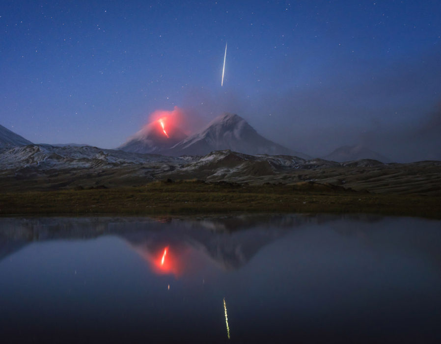
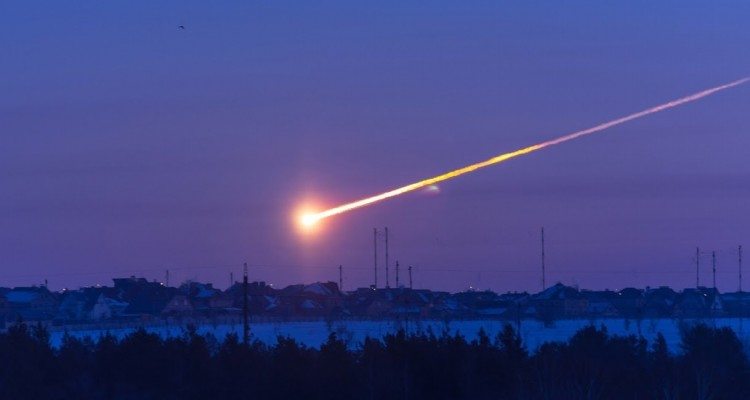
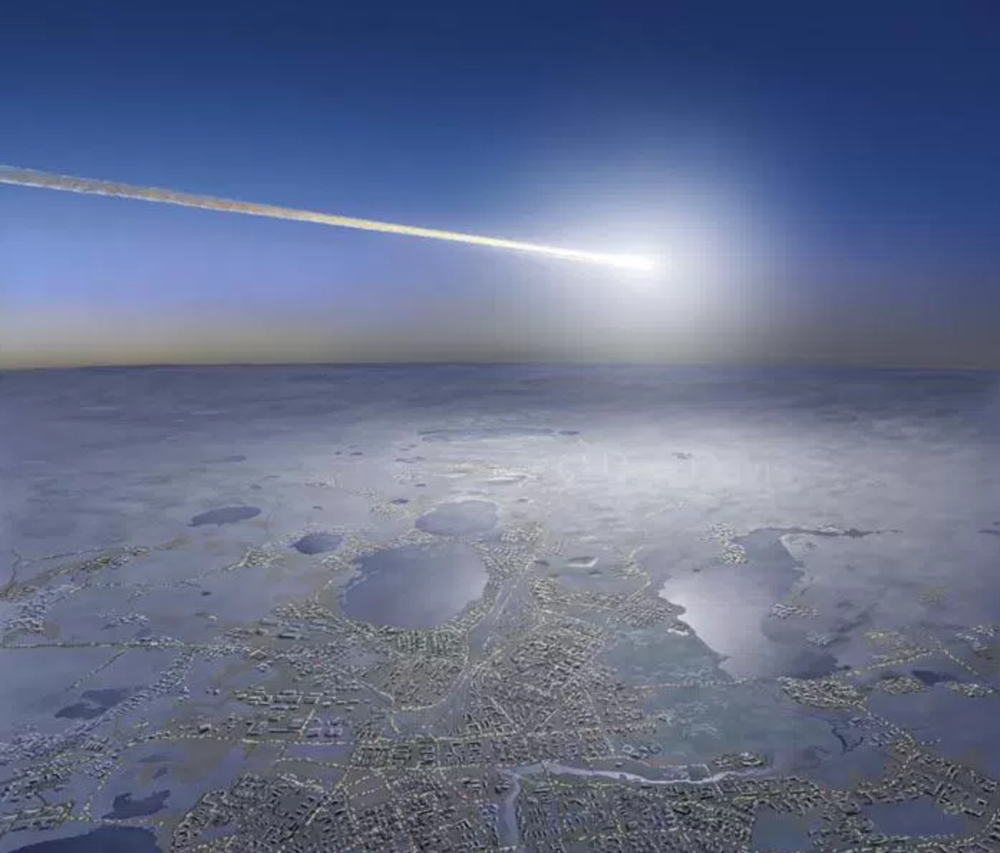
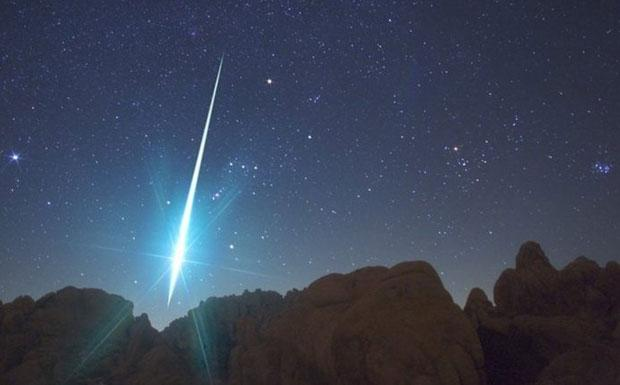
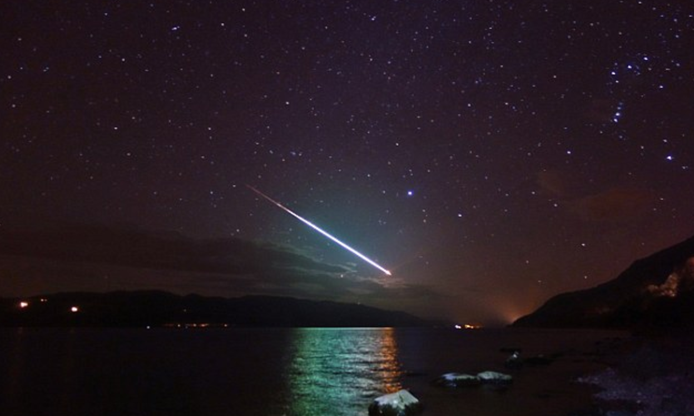
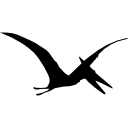

<section>
    <div class="topSection">
        <div class='area'>Fireballs
            <div>
            </div>
</section>

<section class='greyBarOneFb'>


</section>

<section class="fireballFacts">

<div>      
    <div class="slideshowFireball">
        <div class="mySlides fade">
            
            <div class="text">Several thousand meteors of fireball magnitude occur in the Earth’s atmosphere each day. The vast majority of
                these, however, occur over the oceans and uninhabited regions, and a good many are masked by daylight. Those
                that occur at night also stand little chance of being detected due to the relatively low numbers of persons
                out to notice them.</div>
        </div>
        <div class="mySlides fade">
            
            <div class="text">Fireballs can develop two types of trails behind them: trains and smoke trails. A train is a glowing trail of
                ionized and excited air molecules left behind after the passage of the meteor. The second type of trail is
                called a smoke trail, and is more often seen in daylight fireballs than at night. Generally occurring below
                80 km of altitude, smoke trails are a non-luminous trail of particulate stripped away during the ablation
                process.</div>
        </div>
        <div class="mySlides fade">
            
            <div class="text">Fireballs can been seen in daylight but the meteor must be brighter than about magnitude -6 to be noticed in
                a portion of the sky away from the sun, and must be even brighter when it occurs closer to the sun.</div>
        </div>
        <div class="mySlides fade">
            
            <div class="text">A Meteor that has not entered Earth’s atmosphere is called a meteoroid. Earth’s atmosphere usually burns up most
                of these meteoroids (now called a meteor once it enters the Earth’s atmosphere). It is the burning up of
                meteors which cause the bright flare seen in the sky; hence the term: fireballs.</div>
        </div>
        <div class="mySlides fade">
            
            <div class="text">The earth’s atmosphere usually burns up most fireballs, but there are a rare few that survive both the atmosphere
                burn and the ground impact; these are called meteorites, and are usually found in impact craters. Some impact
                are so strong, the entire meteor is vaporized, leaving no trace or meteorite in its crater.</div>
        </div>
        <a class="prev" onclick="plusSlides(-1)">&#10094;</a>
        <a class="next" onclick="plusSlides(1)">&#10095;</a>
    </div>
    <br>
    <div style="text-align:center">
        <span class="dot" onclick="currentSlide(1)"></span>
        <span class="dot" onclick="currentSlide(2)"></span>
        <span class="dot" onclick="currentSlide(3)"></span>
        <span class="dot" onclick="currentSlide(4)"></span>
        <span class="dot" onclick="currentSlide(5)"></span>
    </div>
    <script>
        var slideIndex = 1;
        showSlides(slideIndex);

        function plusSlides(n) {
            showSlides(slideIndex += n);
        }

        function currentSlide(n) {
            showSlides(slideIndex = n);
        }

        function showSlides(n) {
            var i;
            var slides = document.getElementsByClassName("mySlides");
            var dots = document.getElementsByClassName("dot");
            if (n > slides.length) {
                slideIndex = 1
            }
            if (n < 1) {
                slideIndex = slides.length
            }
            for (i = 0; i < slides.length; i++) {
                slides[i].style.display = "none";
            }
            for (i = 0; i < dots.length; i++) {
                dots[i].className = dots[i].className.replace(" active", "");
            }
            slides[slideIndex - 1].style.display = "block";
            dots[slideIndex - 1].className += " active";
        }
    </script>
 </div>

 <!--<div class="factLabel">
            <h1>
                <span> F </span>
                <span> A </span>
                <span> C </span>
                <span> T </span>
                <span> S </span>
            </h1>
        </div>-->

</section>

<!--<section class='greyBarFourFb'></section>-->

<section class="scrollChart">
    <div class="chart-wrapper">
        <canvas id="myChart"></canvas>
    </div>
</section>
<section>
    <div class="keyBox">
        <p class='top'>The graph above shows the data from NASA regarding the velocity and energy of fireballs in the last 29 years starting
            with the most recent fireballs and working our way back to 1988.</p><br>
    
        <p class='top'>The energy levels, as shown in yellow, are the approximate total radiated energy in the atmosphere in Joules.
                    To put the energy into perspective 38.4 Joules is equilant to the energy in a nuclear bomb.</p><br>
   
        <p class='top'>The velocity of each fireball, as shown in pink, are the magnitude of the meteor's pre-impact velocity in
                    kilometors per second. To put the velocity into perspective 5 kilometors per second is 11,185.7 miles
                    per hour or 3 miles per second</p>
            
        </div>
    </div>
</section>
<!--<section class='greyBarFourFb'></section>-->

<section>
    <div class='bottomPic'>
        <div ui-sref="dinosaur"></div>
    </div>
</section>